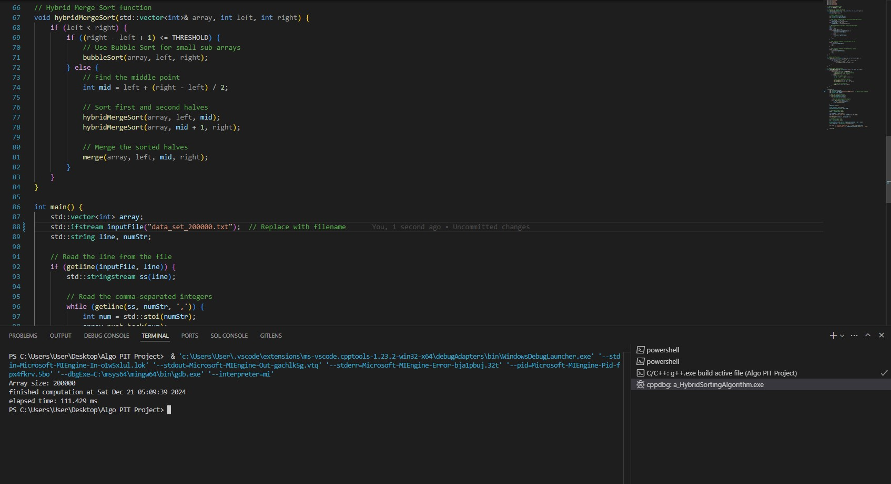
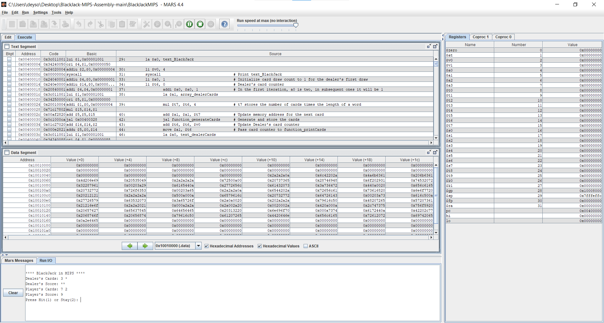
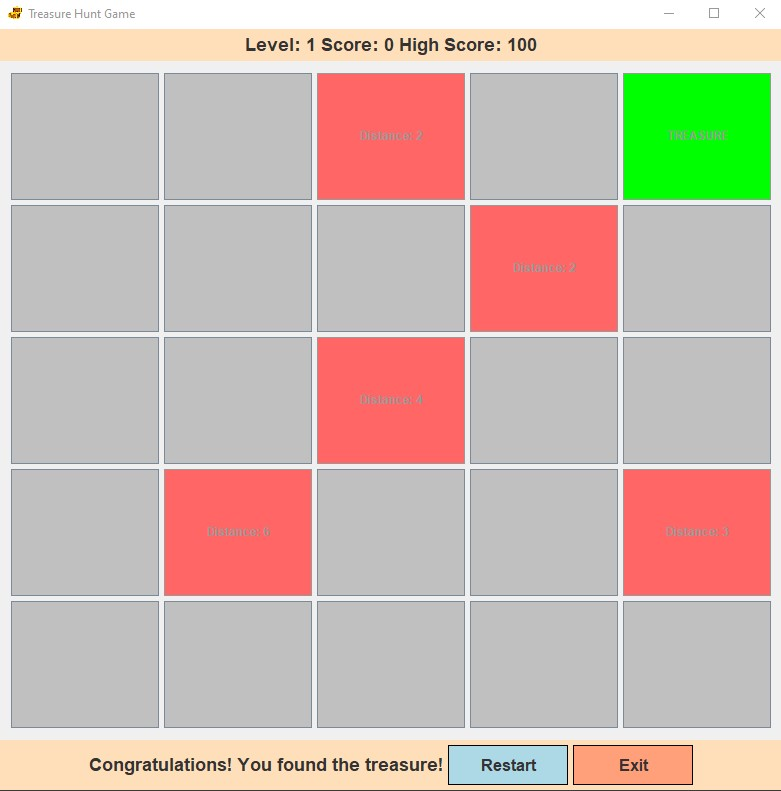

About Me

I'm Harvey Francis P. Magarin, currently studying as a 3rd Year Computer Science student.
I chose Computer Science because I love to understand how problems work and can be solved using different technologies. Some of the skills I have obtained from my studies are programming, software development, and as well as working as a team.
Even until now, I am still learning a lot about the opportunities and potentials of being in Computer Science and I plan on working hard to refine my skills and be able to utilize them for creating efficient and effective solutions!
Here are some of the awesome projects I have created/participated in making!.
Projects
Bubble Merge Hybrid Sort
Hybrid sorting algorithm that combines both Bubble Sort and Merge Sort.

Github
Blackjack MIPS in Assembly
Program in MIPS assembly language that is designed to simulate a simple Blackjack card game.

Github
Simple Treasure Game in Java using Jframe
A simple game in Java that uses Jframe where you find the treasure tile and get high scores.

Github
Skills
Technical Skills
- Programming Languages: Proficiency in languages like Python, Java, C++, and/or JavaScript.
- Data Structures & Algorithms: Strong understanding of arrays, linked lists, trees, graphs, hashmaps, and algorithmic techniques (e.g., sorting, searching, dynamic programming).
- Version Control: Experience with Git and platforms like GitHub/GitLab.
- Computer Networks: Basic knowledge of networking protocols (TCP/IP, HTTP, FTP) and socket programming.
- Artificial Intelligence & Machine Learning: Exposure to machine learning models, frameworks like TensorFlow, PyTorch, or scikit-learn.
Analytical & Problem-Solving Skills
- Logical Thinking: Ability to break down problems into smaller components.
- Debugging: Proficient in identifying and fixing code errors.
Project Management & Collaboration
- Team Collaboration: Experience working in group projects using Agile or Scrum methodologies.
- Technical Documentation: Ability to write clear and concise project documentation.
Soft Skills
- Time Management: Balancing multiple academic and personal projects effectively.
- Adaptability: Quickly learning new tools, frameworks, and technologies.
Contact